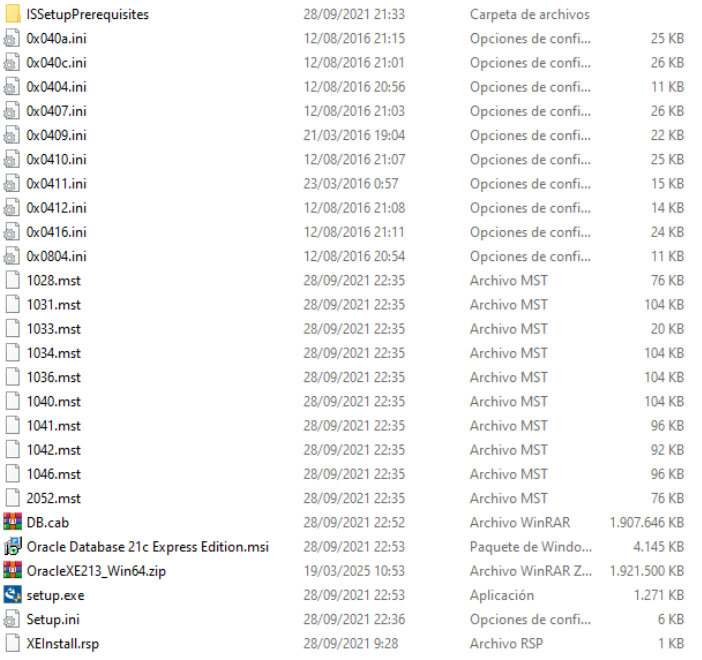
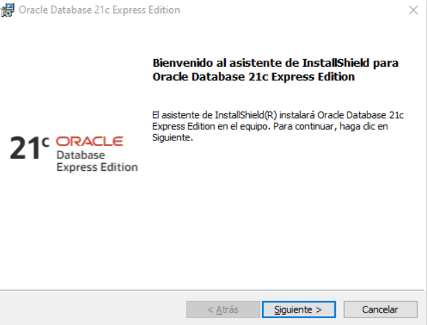
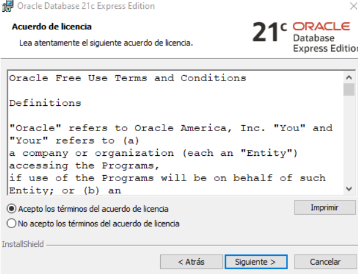
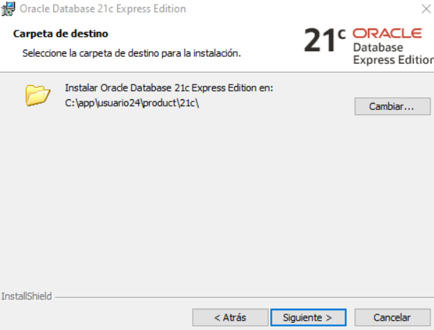
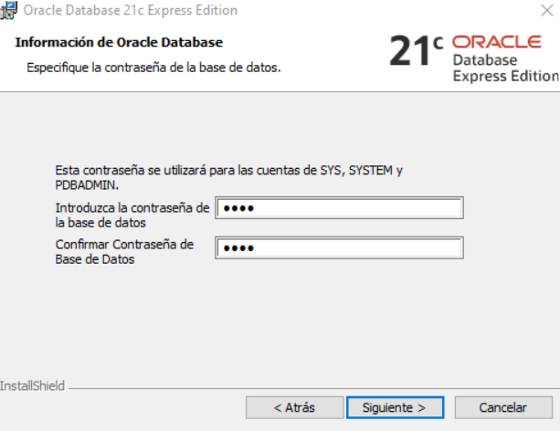
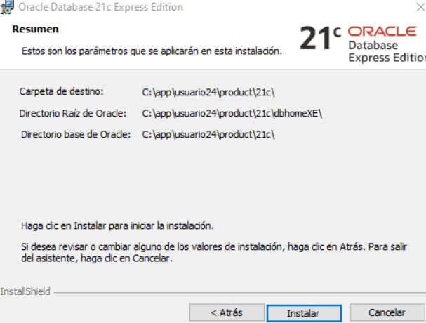
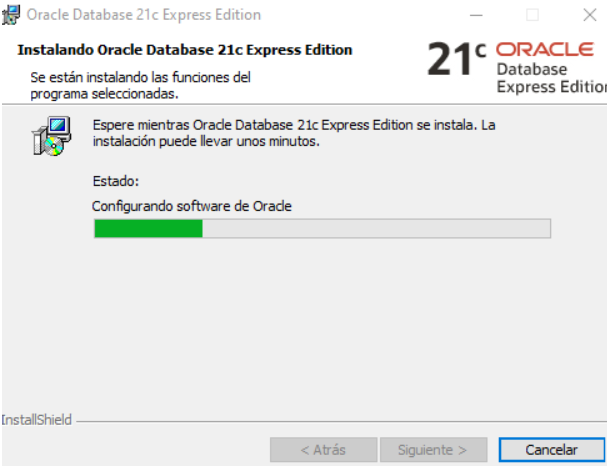
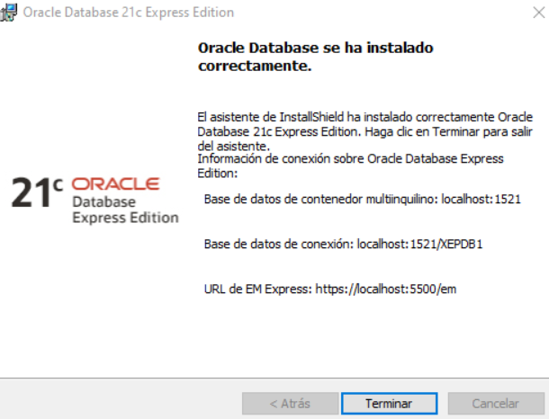
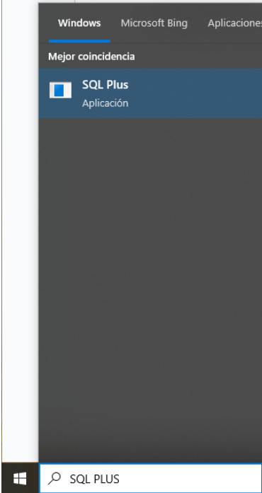
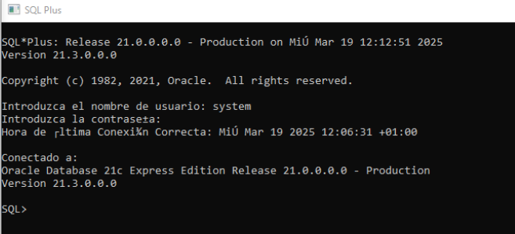

Manual de Instalación de Oracle Database 21c Express Edition
Paso 2: Instalar Oracle Database
Extraiga el contenido del archivo descargado y ejecute
setup.exe. Luego, siga estos pasos:
- Acepte los términos y condiciones.
- Seleccione la carpeta de instalación.
- Ingrese una contraseña segura.
- Haga clic en "Instalar" y espere a que finalice el proceso.








Paso 3: Verificar la Instalación
Abra la barra de búsqueda de Windows y escriba "SQL Plus". Inicie
sesión con:
- Usuario: system
-
Contraseña: la que definió durante la instalación

